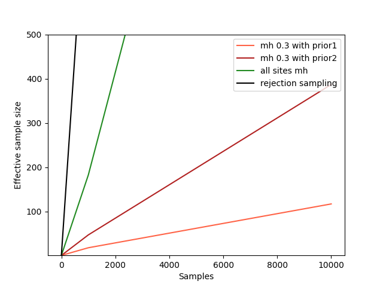
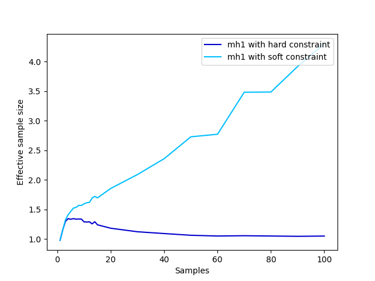
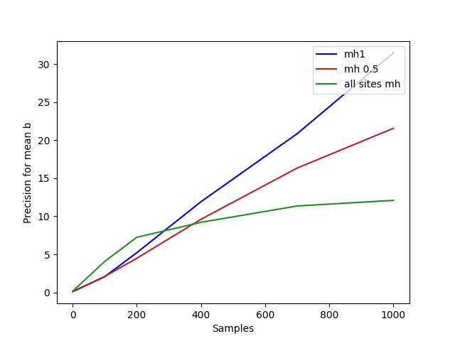

module ControlFlowDemo where
import LazyPPL
import LazyPPL.SingleSite
import LazyPPL.Distributions
import Control.Monad
import Graphics.Matplotlibprior1 :: Prob (Bool,Bool)
prior1 =
do x <- bernoulli 0.5
y <- if x then bernoulli 0.4 else bernoulli 0.7
return (x,y)x changes, y has to change too, and vice
versa.
model :: Prob (Bool,Bool) -> Meas Bool
model prior =
do (x,y) <- sample prior
score (if x==y then 1 else 0)
return xThe posterior probability of (model prior1) returning
true is 4/7.
Since x and y are correlated, it is not a
good idea to use a naive Metropolis Hastings simulation. But this is an
extreme example, and less extreme examples might appear in more complex
probabilistic programs that do benefit from Metropolis Hastings
simulation, where the correlations are not known in advance.
prior2 :: Prob (Bool,Bool)
prior2 =
do x <- bernoulli 0.5
ytrue <- bernoulli 0.4
yfalse <- bernoulli 0.7
return (if x then (x,ytrue) else (x,yfalse)) Of course, we could solve this particular program analytically. The point is rather that we have a universal program transformation manipulation that could be applied automatically.
The following chart shows that the effective sample size (the ratio between the variance of a single true sample and the variance among the generated samples) is much better with this second implementation of the prior, although Metropolis Hastings is still far from optimal for this contrived problem.
-- Take a sampler (m) returning reals, regarded as an estimator,
-- and calculate the mean and precision for the estimator.
-- k is the number of samples to use in the estimator.
-- n is the number of runs to average over to approximate the mean, variance and ess.
meanPrec :: IO [(Double,a)] -> Int -> Int -> IO (Double,Double)
meanPrec m n k =
do xwss <- replicateM n m
let as = map ((\x -> x / (fromIntegral k)). sum . map fst . take k) xwss
let mean = (sum as) / (fromIntegral n) -- sample mean
let var = (sum (map (\x -> (x - mean)^2) as)) / (fromIntegral n) -- sample variance
return (mean,1/var)plotESSA =
do putStrLn "Plotting images/controlflow-essA.png..."
let xs = [1,1000,10000]
-- A rejection sampler where the scores are known to be 0 or 1.
let rejectionsampler m = fmap (filter (\(_,w) -> w>0.00001)) $ weightedsamples $ m
let truevar = (4.0/7.0) - (4.0/7.0)^2 -- variance for one true sample
-- Tests to plot
as <- forM xs $ fmap (\(_,prec)->truevar*prec) . meanPrec (mh 0.3 $ fmap fromBool $ model prior1) 100
cs <- forM xs $ fmap (\(_,prec)->truevar*prec) . meanPrec (mh 0.33 $ fmap fromBool $ model prior2) 100
es <- forM xs $ fmap (\(_,prec)->truevar*prec) . meanPrec (mh 1 $ fmap fromBool $ model prior1) 100
fs <- forM xs $ fmap (\(_,prec)->truevar*prec) . meanPrec (rejectionsampler $ fmap fromBool $ model prior1) 100
file "images/controlflow-essA.png" $
plot xs as @@ [o2 "label" "mh 0.3 with prior1", o2 "color" "tomato"] %
plot xs cs @@ [o2 "label" "mh 0.3 with prior2", o2 "color" "firebrick"] %
plot xs es @@ [o2 "label" "all sites mh", o2 "color" "forestgreen"] %
plot xs fs @@ [o2 "label" "rejection sampling", o2 "color" "black"] %
ylim (1::Double) (500::Double) %
xlabel "Samples" % ylabel "Effective sample size" % legend @@ [o2 "loc" "upper right"]
putStrLn "done."mh1): the first
implementation of the prior is especially bad, because all
proposals will be rejected except perhaps one. This irreducibility
arises from the hard constraints (scores of 0) and is
avoided to some extent with a softer constraint:
softModel :: Prob (Bool,Bool) -> Meas Bool
softModel prior =
do (x,y) <- sample prior
score (if x==y then 0.9 else 0.1)
return x
fromBool b = if b then 1.0 else 0.0
plotESSB =
do putStrLn "Plotting images/controlflow-essB.png..."
let xs = [1,2,3,4,5,6,7,8,9,10,11,12,13,14,15,20,30,40,50,60,70,80,90,100]
let truevar = (4.0/7.0) - (4.0/7.0)^2 -- variance for one true sample
-- Tests to plot
as <- forM xs $ fmap (\(_,prec)->truevar*prec) . meanPrec (mh1 $ fmap fromBool $ model prior1) 1000
bs <- forM xs $ fmap (\(_,prec)->truevar*prec) . meanPrec (mh1 $ fmap fromBool $ softModel prior1) 1000
file "images/controlflow-essB.png" $
plot xs as @@ [o2 "label" "mh1 with hard constraint", o2 "color" "mediumblue"] %
plot xs bs @@ [o2 "label" "mh1 with soft constraint", o2 "color" "deepskyblue"] %
xlabel "Samples" % ylabel "Effective sample size" % legend @@ [o2 "loc" "upper right"]
putStrLn "done."linreg :: Meas (Double,Double)
linreg =
do
a <- sample $ normal 0 3
b <- sample $ normal 0 3
let dataset = [(0,5), (0.1,10), (0.2,0)]
mapM (\(x, y) -> score $ normalPdf (a*x + b) 0.5 y) dataset
return (a,b)
(Here we plot precision, which is proportional to effective sample
size, because a general effective sample size analysis isn’t written
yet.)
plotPrec =
do putStrLn "Plotting images/controlflow-prec.png..."
let xs = [1,100,200,400,700,1000]
-- Tests to plot
as <- forM xs $ fmap snd . meanPrec (mh 0.5 $ fmap snd $ linreg) 1000
bs <- forM xs $ fmap snd . meanPrec (mh1 $ fmap snd $ linreg) 1000
es <- forM xs $ fmap snd . meanPrec (mh 1 $ fmap snd $ linreg) 1000
file "images/controlflow-prec.png" $
plot xs bs @@ [o2 "label" "mh1", o2 "color" "mediumblue"] %
plot xs as @@ [o2 "label" "mh 0.5", o2 "color" "firebrick"] %
plot xs es @@ [o2 "label" "all sites mh", o2 "color" "forestgreen"] %
xlabel "Samples" % ylabel "Precision for mean b" % legend @@ [o2 "loc" "upper right"]
putStrLn "done."main = do
plotESSA
plotESSB
plotPrec